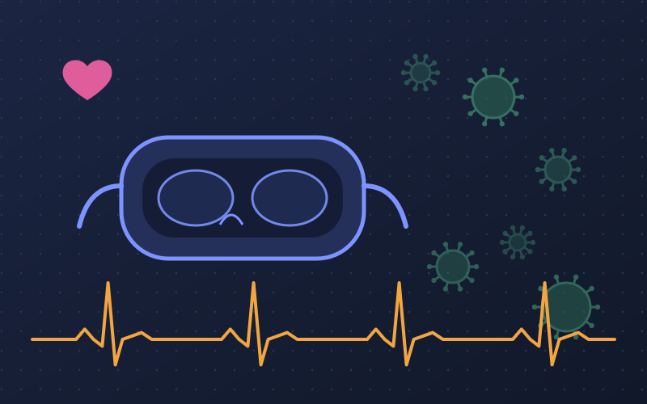

HCIXRMS thesisIRB-approved
Gamified VR and Android Exposure Therapy for Germophobia
Supervisor: Dr. Farjana Z. Eishita, Idaho State University
A VR and Android serious game that delivers graded exposure therapy for germophobia. The game syncs with the player’s heart rate in real time through a smartwatch, and branching player choices change how elements of the environment respond. We will evaluate it in an IRB-approved user study.
- Unity
- C#
- Android SDK
- Smartwatch heart-rate sync
- Firebase